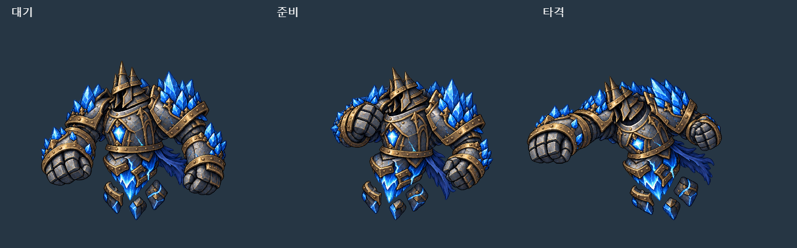
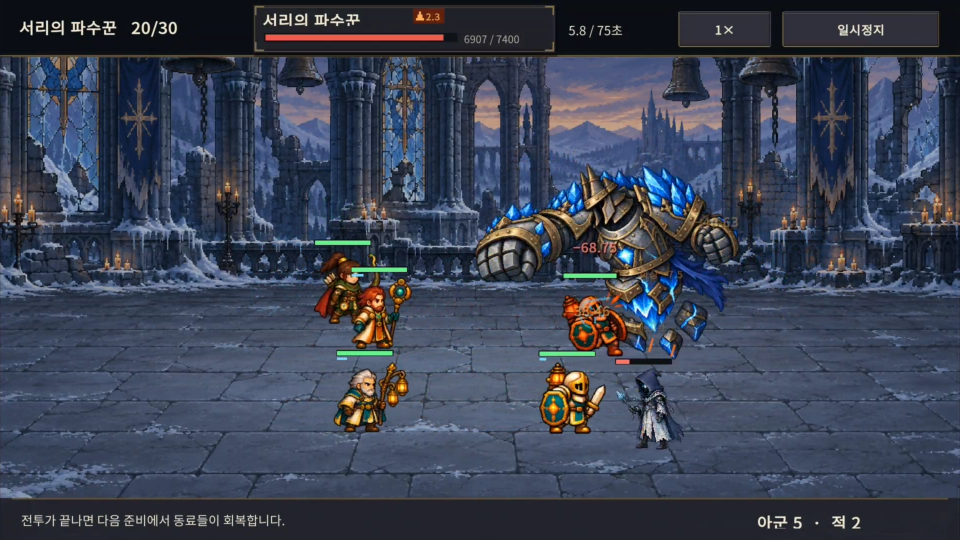
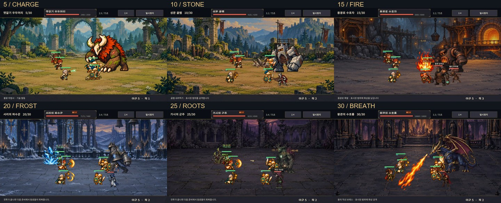
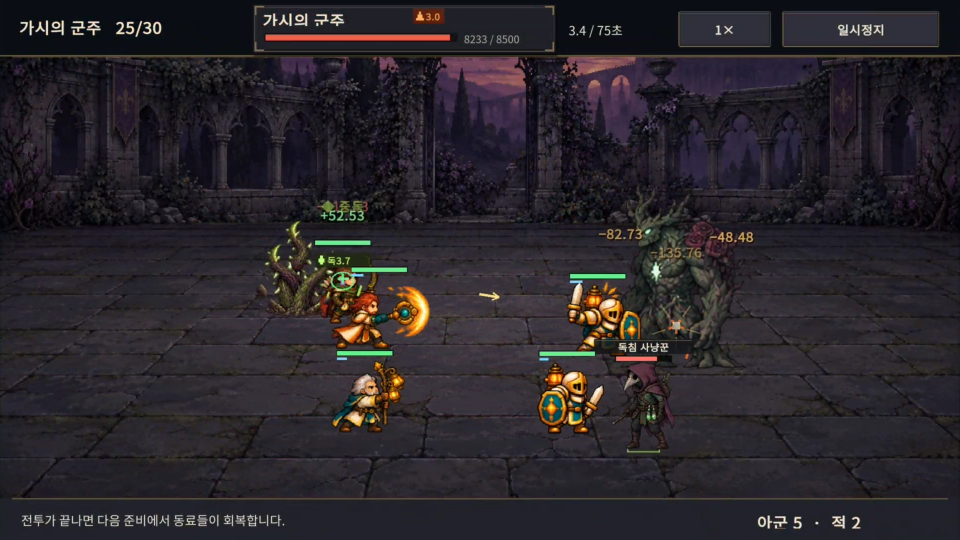
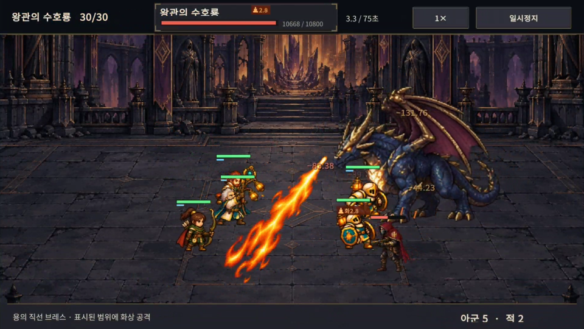
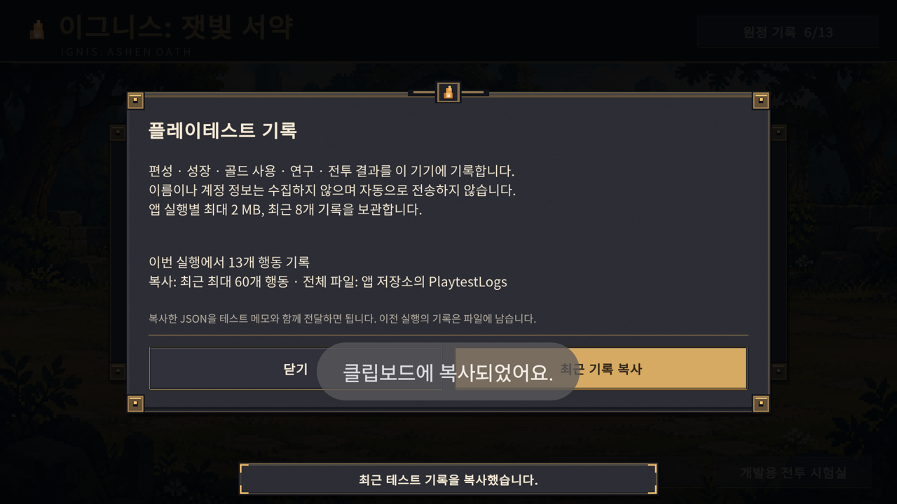
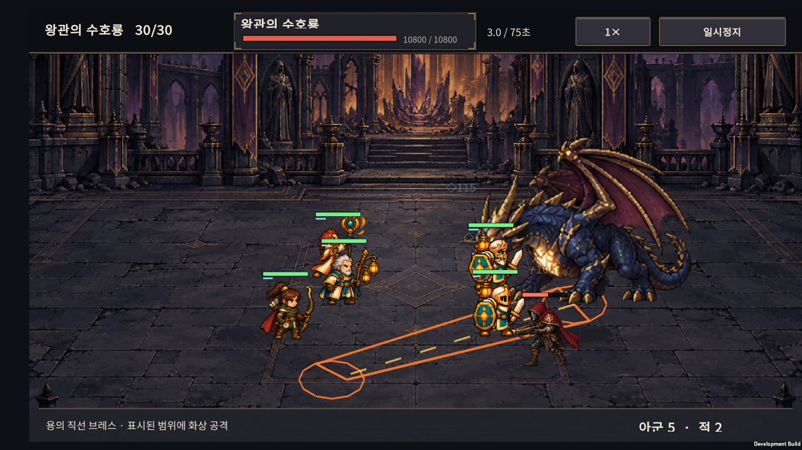
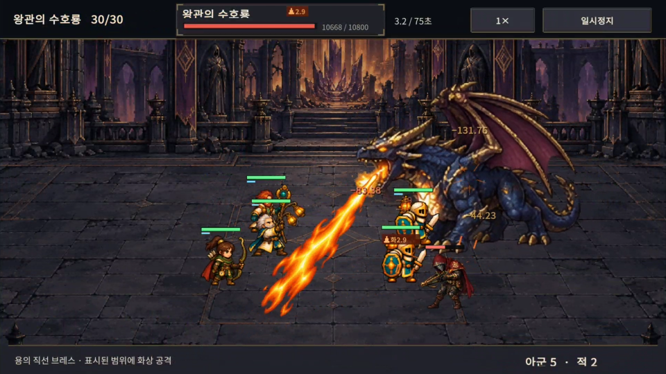
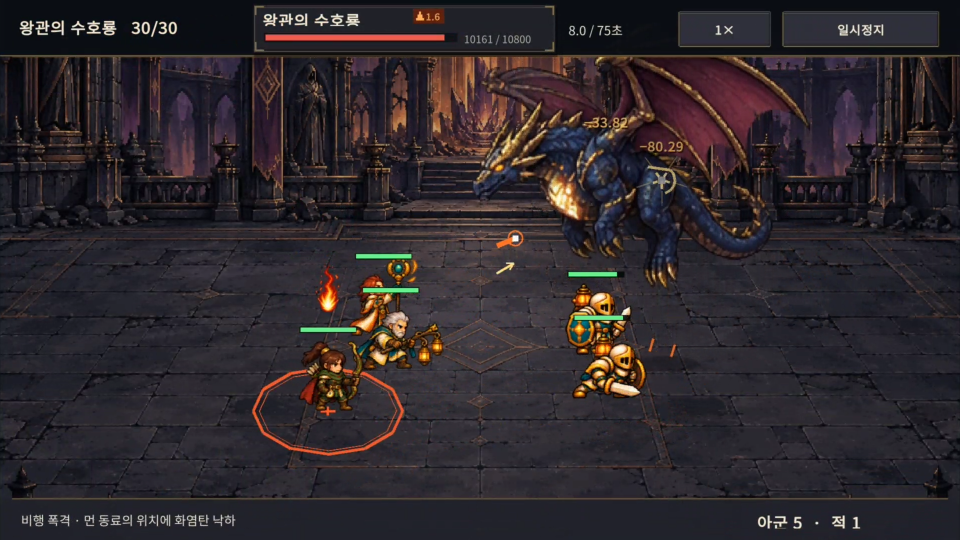

2026-10-25 · IGNIS: ASHEN OATH / 이그니스: 잿빛 서약
출시 준비 계획의 1단계 작업이다. 보스 정보를 읽기 쉽게 만들고, 이후 사람 플레이테스트를 분석할 수 있는 최소 기록 기능을 연결했다. Normal 30전투의 능력치·골드 비용·보상·난도와 공격 계산은 그대로다.
1. 변경한 것
| ID | 변경 | 범위 |
|---|---|---|
| B01 | 보스 이름·HP·상태를 상단 고정 패널에 표시 | 비행과 공격 중에도 위치가 고정된다. 몸 위 중복 보스 정보는 제거했다. 시간·배속·일시정지 버튼은 별도 영역이다. |
| B02 | 직접 타격과 화상·중독 피해를 구분 | DOT는 이름·색·위치로 구분하며 같은 대상·같은 상태의 0.22초 이내 표시만 합산한다. 빙결·화상·중독에는 서로 다른 작은 도형을 쓴다. 실제 피해 계산은 합치지 않는다. |
| B03 | 폐광·정원 일반 적에 작은 명판과 발 표식 추가 | 어두운 배경에서 적의 위치를 파악하기 쉽게 했다. 보스 뒤 호위의 자연스러운 가림과 아군 전면 표시 정책을 유지한다. |
| B04 | 지원 기술에 나오던 공격 효과 교정 | 기본 원거리 공격에만 선딜 투사체와 발사음을 표시하고, 같은 팀 대상의 지원 기술에는 근접 베기 효과를 만들지 않는다. |
| B05 | 기기 안에 진단 JSONL 저장, 최근 기록 복사 | 개발 빌드의 거점 → 테스트 기록 → 최근 기록 복사. 계정·서버 연결 없이 동작한다. |
직접 피해 숫자는 같은 대상의 최근 타격을 최대 6개 위치에 나누고 어두운 그림자를 추가했다. 화면 위·아래 경계에서는 전체 배치를 함께 이동한다. 극단적인 밀집 상황의 모든 겹침을 없애는 방식은 아니며, 숫자 표시는 기존처럼 동시에 최대 24개다.
2. 보스마다 다른 공격 효과
사용자의 추가 요청에 따라 기존 6종의 고유 공격을 눈으로 구분하기 쉽게 강화했다. 새로운 피해 패턴을 추가하거나 난도를 올린 작업은 아니다. 기존 패턴의 예고 → 실제 타격 → 잔여 효과를 분리했다.
| 보스 | 기존 고유 공격 | 이번 시각 보완 |
|---|---|---|
| 잿갈기 우두머리 · 5전투 | 경로를 예고한 돌진 | 흙먼지 구름과 돌조각이 터졌다 흩어지는 프레임 애니메이션 |
| 성문 골렘 · 10전투 | 내려찍기, 분노 후 후속 충격파 | 바위 덩어리가 솟고 부서지며 가라앉는 애니메이션 |
| 용광로 수호자 · 15전투 | 폭발, 분노 후 불씨파 | 화염 폭발 프레임을 사용하고 본공격과 후속 공격의 높이·크기를 구분 |
| 서리의 파수꾼 · 20전투 | 원형 서리 공격·빙결 | 입체적인 얼음 결정이 솟고 조각으로 깨지는 애니메이션 |
| 가시의 군주 · 25전투 | 여러 지정 지점의 독가시 | 굵은 나무껍질·이끼·가시가 그려진 덩굴의 발생 → 성장 → 붕괴 |
| 왕관의 수호룡 · 30전투 | 직선 브레스, 비행 낙화, 착지 공격 | 입에서 뻗는 불꽃, 낙하 불덩이, 착탄 폭발을 각각 프레임으로 재생 |
효과는 실제 공격 이벤트의 좌표를 받아 그린다. 위험 범위와 예고 시간, 피해·화상·빙결·독 계산은 유지했다. 낙하 불꽃은 일반/분노 상태의 실제 경고 시간에 맞춰 내려온다. 투명 PNG 시트 6장을 캐시하고 프레임 UV를 바꿔 재생한다. 4열 × 2행의 시트이며, 낙하 불꽃 시트는 위 4프레임을 낙하·아래 4프레임을 착탄에 사용한다. 기존 효과 24개 상한 안에서 동작하며 매번 파티클 오브젝트나 텍스처를 생성하지 않는다.
처음 구현한 선·도형 기반 공격 효과는 사용자의 “여전히 선처럼 보인다”는 피드백을 받아 교체했다. 바닥 위험 범위의 선은 조작 정보로 남겼고, 보스 공격 본체는 실제 이미지 애니메이션으로 바꿨다. 기본 공격·상태 표시의 작은 선 효과는 이번 교체 범위 밖이다. 화염 폭발 시트는 용광로·수호룡 착탄·착지에 재사용하며 연출 크기가 다르다. 신규 피해 패턴을 추가한 작업은 아니다.
에셋은 built-in image_gen으로 생성했으며 원본과 생성 프롬프트를 보관했다. 런타임은 Point 필터·밉맵 없음·Clamp·최대 1024px로 가져온다. 보스별 주요 타격 효과를 확인한 1차 통합이며 장시간 성능 측정과 추가 아트 보정은 남아 있다.
도트 공격 애니메이션 미리보기에서 시트의 프레임 동작을 반복 재생할 수 있다.
얼음 보스 · 부유형 갑주와 전신 공격
긴 치마가 길쭉해 보인다는 피드백에 따라 넓은 어깨·짧은 몸통·얼음 핵으로 부유하는 서리 파수꾼을 새로 만들었다. 이후 팔 분리 애니메이션은 사용자가 거부해 제거했다. 현재는 팔이 몸통에 붙어 있는 완성된 전신 그림 4장을 재생한다.
- 최신 디자인·공격 미리보기 · 전체 보스 크기 비교.
- 대기 → 준비 → 타격 → 복귀. 준비 때 상체를 뒤로 젖히고, 타격 때 전신을 왼쪽으로 숙인다. 팔 조각의 이동·회전·별도 레이어가 없다.
- 일반 공격과 서리 공격은 같은 전신 자세를 사용한다. 서리 공격은 긴 준비 자세와 기존 얼음 효과로 구분한다. 전용 양팔 모션을 추가했다는 의미는 아니다.
- 대기 높이 290, 폭 약 336. 모든 자세에 동일한 배율을 사용해 숙인 자세를 억지로 늘리지 않는다. 공격 자세 높이는 약 262이고 하단 부유 기준점은 유지한다.
- 바닥에서 10만큼 떠 있고 대기 ±1.2, 이동 ±2의 작은 전신 부유를 사용한다. 죽으면 전신이 함께 페이드된다.
- 회색 철갑·남색 천·푸른 결정 원화를 참고했다. 전신 시트에서 밝고 매끈해진 재질은 별도 편집으로 보정했다. 원화의 질감과 완전히 동일한 픽셀을 보장하는 방식은 아니다.
- 기존 피해 이벤트 순간에 타격 프레임을 표시한다. 배속·일시정지·서리 공격·빙결·예고·피해·이동 속도 계산은 유지했다.
- 투명 PNG 시트 한 장, Point·최대 1024px. 클리핑 텍스처를 캐시하고 프레임 UV만 바꾼다. 보스 본체는 한 번 그린다.
- 최종 전신 모션·재질 보정 프롬프트. 기존 보행·긴 치마·팔 분리 실험은 미채택 이력이다.

Buddy2에 재질 보정 전신 모션 APK를 설치해 20전투를 1배속으로 25초 녹화했다. 실제 화면에서 준비 자세, 전신을 숙이는 타격, 복귀를 확인했다. Unity 예외·Android FATAL 로그는 없었다. 테스트 후 저장은 시작 전 백업과 바이트 단위로 일치하게 복원했다. 이번 마지막 교체의 실기기 확인은 20전투의 대표 공격 구간이며 장시간 성능 검사나 전체 게임 회귀 검사가 아니다.

3. 테스트 기록 사용법
- 앱에서 새 원정을 시작해 플레이한다.
- 문제를 발견하면 화면과 상황을 적는다. 거점의 테스트 기록을 연다.
- 최근 기록 복사를 누르고 테스트 메모에 붙여 넣는다. 자동 전송은 없다.
- 한 원정 전체를 분석할 때는 전체 JSONL 파일을 함께 보관한다. 앱 실행이 여러 번이었다면 각 실행의 파일이 필요하다.
기록하는 정보
- 스키마
ignis-playtest-1, 개발 버전v0.39, 앱 버전, 무작위 세션/원정 구분자. - 새 원정의 생성 시드, 단계·현재 RNG 상태·출전 및 대기 편성·성장·전승·배치.
- 시작 편성과 원정에 적용한 영구 연구, 원정 안에서 구매한 전술.
- 소환·성장·진화·결합·되돌리기·배치·전술 구매 후 상태와 골드 변화.
- 승패, 등불, 보상, 실제 전투 시뮬레이션 시간, 거점 복귀와 앱 백그라운드/복귀.
보관 범위와 해석
- 개발 빌드에서만 기록한다. 이름·계정·휴대폰 고유 식별자·연락처는 수집하지 않는다.
Application.persistentDataPath/PlaytestLogs에 실행별 JSONL을 저장한다. 현재 Android 앱에서는/sdcard/Android/data/com.expeditionprototype.combatdemo/files/PlaytestLogs다.- 최근 8개 앱 실행, 실행별 최대 2 MB. 새 실행이 시작되면 오래된 진단 파일부터 정리한다. 게임 저장은 이 정리 대상이 아니다.
- 복사는 최근 최대 60개 이벤트 / 180 KiB까지다. 일부만 복사되면
recentEventsOnly: true로 표시한다. 전체 원정 기록이라고 해석하지 않는다. - 원래 시드를 저장하지 않았던 기존 원정은
restored_checkpoint,initialSeedKnown: false다. 현재 RNG를 원래 시드라고 표기하지 않는다. 앱을 다시 켜도 새 진단 구간으로 시작하므로 여러 구간의 자동 연결은 아직 없다. - 내보낸
state는 게임의ExpeditionRun.Restore에 넣어 해당 시점 이후 전투·소환을 재현할 수 있다. 이전 되돌리기 이력은 생략하므로 과거 행동의 취소까지 복구하는 게임 백업은 아니다. hasState: true인 이벤트만 상태 스냅샷으로 읽는다. 앱 포커스·백그라운드 이벤트는 상태가 없는 메타데이터다. Unity 직렬화가 null 클래스에 기본값 객체를 만들 수 있으므로state.Wave만 보고 집계하지 않는다.battleSeconds는 게임 속도 기준이다.foregroundSeconds는 앱이 전면에 있는 누적 실제 시간이며 메뉴와 게임 내 일시정지를 포함한다. 앱이 뒤로 간 시간은 제외한다. 준비·휴식 시간의 정밀 분리는 관찰 메모로 보완한다.battle_win/loss는 실제 결과 콜백에서만 남긴다.battle_exit,app_background,run_replaced를 패배로 집계하지 않는다. 강제 종료는 마지막 이벤트 뒤에 기록 없이 끝날 수 있다.- 용량 한도와 쓰기 오류는 기록 화면에 알리고 진단만 멈춘다. 원정 저장·게임 진행을 멈추지 않는다. 강제 종료 시 마지막 JSONL 행은 불완전할 수 있으므로 분석할 때 마지막 손상 행을 제외한다.
4. 검증 기록
SOL이 전투 표시를 구현하고 ASTRA가 Core 영향과 진단 구조를 검토했다. 내보낸 이력을 null로 생략하면 게임의 복원 검사가 거부하는 문제를 발견해 빈 배열로 수정했다. 내보내기 → 복원 → 동일 랜덤 소환과 전투 결과 검사를 추가했다.
자동 검사는 진단 저장·복사·용량/파일 수 제한·I/O 실패 격리·시드 구분·골드 변화·전투 결과 보존, 보스 HUD 영역, DOT 합산, 일시정지와 1회 정산, 발 기준 가림 정책을 다룬다.
자동 검사와 빌드
- 진단 검사 93개 통과: 로그가 게임 상태·RNG를 바꾸지 않음, 소환 비용과 보상, 내보낸 상태의 복원·다음 소환·전투 결과 재현, 용량 제한과 쓰기 오류 격리.
- HUD·숫자 배치와 10개 보스 공격 이벤트 → 효과 연결 검사 통과. 상하 경계의 숫자 6개 배치가 서로 겹치는 문제도 수정했다.
- 스프라이트 원본 6장·48개 프레임, 투명 경계와 Unity의 Point·Clamp·1024px 가져오기 설정 검사 통과. 먼지 시트 상단의 불규칙한 빈 간격은 별도 분할 좌표로 처리한다.
- 일시정지·재시작·결과 콜백 1회 정산 검사, 발 기준 표시 순서·호위 표식 18개 검사 통과.
- 최종 Android 개발 APK 빌드 성공.
Core파일 변경은 없다. 대표 상태의 동일 시드 검사이며, 모든 조합의 난도 불변을 전수 검사했다는 의미는 아니다. - 기기 검증을 마친 공격 시트 빌드 로그:
unity/Logs/v039-sprite-build.log. 보행 시험 빌드unity/Logs/v039-walk-build.log는 컴파일만 통과했으며 시각 품질 미달로 설치하지 않았다. - APK:
unity/Builds/Android/expedition-combat-prototype.apk. - 여섯 보스 공격 효과 검증 APK SHA-256:
C4A6D6C1F293DE28ECD6BAE3CC17138B911101890C244947F9288CFE3CC7B24E. - 긴 판금 치마 최초 적용 APK SHA-256:
2B4EF0BC08A39EC06EC50947FF1B5032650AB33332EF01B9C24C2C3CC04A4C8A. 빌드 로그:unity/Logs/v039-draped-build.log. 24개 상태 모두 같은 새 실루엣·높이 244·Point/1024 가져오기 설정 검사를 통과했다.
Buddy2 확인 범위
- 여섯 보스와 14·24·29전투의 밀집 장면을 1배속/2배속으로 캡처했다. 보스 HP·이름·상태가 비행과 공격 중에도 상단에 남고, 배속·일시정지와 겹치지 않는지 확인했다.
- 선 효과를 스프라이트로 교체한 최종 APK에서 여섯 보스 전투를 다시 녹화했다. 바위·화염·얼음·덩굴의 프레임과 접지, 수호룡의 입에서 나오는 브레스·비행 낙화·착탄을 확인했다. 숲의 먼지는 배경색과 비슷해 다른 속성 공격보다 대비가 약하며, 추가 아트 보정 후보로 남긴다.
- 같은 Buddy2에서 16:9 화면 크기를 임시로 적용해 보스 HUD와 조작 영역도 확인했다. 이는 다른 물리 기기 시험을 대신하지 않는다.
- 새 원정 → 소환 → 전투 → 앱 백그라운드/복귀 → 승리 → 거점 → 기록 복사 흐름을 확인했다. 실제 로그에서 소환 −20G, 승리 +20G, 전투 시간, 원래 시드 유무, 백그라운드 이벤트의
hasState: false를 확인했다. - 테스트는 미리 준비한 QA 체크포인트를 사용했다. 사용자의 저장 파일은 시작 전 백업으로 복원하고 바이트 단위 일치를 확인했다. 화면 크기도 원래 값으로 복원했다.
실제 기기 화면



Buddy2 수호룡 전투 녹화 · 브레스 → 비행 → 낙화 → 착지


5. 남은 작업
보스 크기 기준에 대한 사용자 의견
사용자는 5전투 보스가 가장 적절하고 다른 보스들은 작아 보인다고 평가했다. 5전투는 그대로 유지하고, 같은 축척에서 몸통 폭·실루엣 면적·장식 비중을 비교해 다른 보스들을 확대했다. 가시 보스는 크게 보정하고, 서리 보스는 짧고 넓은 형태로 재제작했으며, 날개와 꼬리가 큰 수호룡은 몸통을 보고 보정했다. 서로 다른 체형의 높이를 같은 숫자로 만드는 작업은 아니다.
| 전투 | 변경 전 높이 | 변경 후 높이 | 확대율 |
|---|---|---|---|
| 5 · 잿갈기 | 244 | 244 | 기준 유지 |
| 10 · 성문 골렘 | 244 | 266 | +9% |
| 15 · 용광로 | 244 | 280 | +15% |
| 20 · 서리 파수꾼 | 244 | 290 | 실루엣 재제작 |
| 25 · 가시 군주 | 250 | 340 | +36% |
| 30 · 수호룡 | 300 | 340 | +13% |
변경 전·후 같은 축척 비교. 원본 종횡비와 발 기준점을 유지했다. 서리는 새 부유형 디자인으로 교체했다. 고정 보스 HUD, 기존 아군 전면 표시와 호위 가림 정책을 유지한다. 수호룡 브레스는 공격 프레임별 입 좌표를 실제 렌더링된 몸체 영역에 맞춰 사용한다. 아래 브레스 정렬 보정 항목을 참고한다. 비행 상승 제한은 아래 후속 보정에서 머리·몸통 기준으로 변경했다. 몸체·타격 효과·투사체 도착점·피해 숫자에 같은 비행 위치를 사용한다. 능력치·판정·사거리·전투 난도는 바꾸지 않는다.
- 신규 플레이어 5~8명의 첫 조작과 실제 원정 플레이를 관찰한다. 이번 체크포인트 시험은 사람의 난도·완주율 통계가 아니다.
- 움직이는 표적을 따라가는 투사체 표현은 유지했다. 실제 청취를 통한 사운드 품질·지연, 장시간 프레임·발열·메모리, 다른 물리 기기는 별도 검증이 필요하다.
- 출시 빌드·광고·영어·설정·게임 저장 복구 작업은 출시 준비 계획에 남아 있다.
- 진단 파일 공유 UI와 여러 앱 실행의 원정 자동 연결은 향후 필요성을 보고 확장한다. 현재는 복사와 로컬 파일 추출 방식이다.
크기 조정 빌드: unity/Logs/v039-size-build.log. 서리 보스의 24개 상태 크기 검사를 통과했고 Android 빌드가 성공했다. 이전 크기 조정 APK SHA-256은 19DDF12A619AB800FDD51E4A995651C6FD50CD9B83D8F70C51033733DDE64CB7이다.
이전 팔 분리 방식의 시험 빌드(현재 미채택): unity/Logs/v039-floating-final-build.log. 24개 상태의 실루엣과 어깨 연결점 고정, 주먹 준비/타격 방향, 서리 양팔 자세, 두 비행 날개 프레임의 상단 HUD 여백 검사를 통과했다. Android APK SHA-256: EF51B43073994DC3CE119AB10835D01557AB7FD736297AA888400DED2AC753F1.
전신 모션·재질 보정 당시 빌드: unity/Logs/v039-full-motion-build.log. 24개 전투 상태가 전신 4자세를 사용하고, 공격 프레임의 부유 기준점을 유지하며, Point/1024 가져오기 설정 검사를 통과했다. 팔별 레이어/회전 코드는 제거했다. Android APK SHA-256: E5F8745A389DAF7F5D9B0FE18BCC3D392FD48C8298191CC67CC8BA57720B15B3.
수호룡 브레스 방향·입 연결 보정
- 기존 효과는 발 위치에서 높이의 일정 비율만큼 이동한 추정 좌표를 사용했다. 공격 프레임마다 달라지는 턱 위치와 일치하지 않았고, 불꽃은 0.44초 동안 보이지만 몸체의 공격 자세는 0.18초 만에 끝났다.
- 입을 벌린 3개 프레임에서 입 좌표를 측정하고 실제 표시 영역을 통해 화면 좌표로 변환한다. 보스가 이동하거나 크기가 바뀌어도 불꽃 시작점이 입을 따라간다.
- 몸체와 불꽃이 동일한 효과 재생 시간을 사용한다. 브레스가 끝날 때까지 입을 벌린 자세를 유지하고, 보스가 쓰러지면 분리된 불꽃을 표시하지 않는다.
- 불꽃이 향하는 끝점은 경고 때 정해진 지면 끝점 그대로다. Core의 타격 판정·사거리·피해량은 변경하지 않았다.
- 자동 검사: 실제 Core 브레스 이벤트 이후 5개 시간 지점의 효과 수명, 3개 공격 자세 × 3개 화면 위치의 입 좌표, 닫힌 입 제외 검사를 통과했다. 기존 수호룡 아트·매핑·패턴 검사 271개도 통과했다.
수호룡 비행 높이·체공 보정
사용자 결정: 지상과 비행에서 몸 크기를 그대로 유지한다. 비행 스프라이트의 축척을 줄이지 않는다.
기존에는 가장 높은 날개 끝까지 상단 안에 넣으려다 중앙에서 상승 폭이 약 11px까지 줄어들었다. 새 기준은 머리·몸통 여백을 확보하고, 높은 날개 끝이 필요하면 상단 HUD 뒤로 지나가도록 한다. HUD는 항상 마지막에 그린다.
중앙·전방의 체공 높이는 기본 104px에 ±6px의 작은 움직임을 더한다. 후방에서는 머리·몸통 여백 때문에 상승 폭이 제한된다. 상승과 착지는 부드러운 곡선을 사용하며, 날갯짓은 초당 2회로 낮춰 체공 움직임과 같은 전투 시계를 사용한다.
그림자는 지면에 고정하고, 높이 올라갈수록 조금 작고 옅어지게 한다. 전투 위치·피격 판정·패턴 시간은 변경하지 않는다.
자동 검사: 두 날개 프레임 × 3개 깊이 × 5개 상승 단계 × 3개 체공 위상에서 원래 축척과 머리·몸통 여백을 확인했다. 중앙·전방의 최대 체공 높이는 98~110px이며, 지상 위치는 그대로다.
최종 빌드 로그:
unity/Logs/v039-dragon-final-build.log. APK SHA-256:27460957CBE7CA24AF9AB26952F4074045C6DEA32B37AC6F796BE99E0474B48B.Buddy2 최종 APK: 30전투 QA 체크포인트에서 1배속 25초를 녹화했다. 브레스 시작/끝의 입 연결, 상승·체공·착지, 머리·몸통 표시와 HUD 전면 표시를 확인했다. Unity 예외·Android 치명 오류는 없었고, 사용자 저장 파일은 이번 기기 시험 직전 백업으로 복원해 바이트 일치를 확인했다. 다른 편성·깊이의 모든 실전 장면을 전수 검증한 것은 아니다.


6. 관련 구현
- 전투 표시:
unity/Assets/Scripts/Presentation/CatalogCombatLab.cs,CatalogBattleEffects.cs,BossSpriteEffects.cs. - 공격 시트:
unity/Assets/Resources/Art/Effects/v039/. - 얼음 보스:
unity/Assets/Resources/Art/Enemies/v039/frost-boss-full-motion.png,FrostBossFloatingArt.cs,FrostBossFloatingValidation.cs. 이전frost-boss-walk.png와FrostBossWalkArt.cs는 미사용 초안이다. - 로컬 기록:
PlaytestLog.cs,PlaytestRecorder.cs,ExpeditionPlaytestScreen.cs. - 행동 연결:
ExpeditionScreen.cs,ExpeditionResearchScreen.cs. - 전체 진단 빌드 진입점:
Expedition.EditorTools.PlaytestLogValidation.ValidateAndBuild. 이번 수호룡 수정 검사/빌드:Expedition.EditorTools.DragonBreathValidation.ValidateAndBuild.